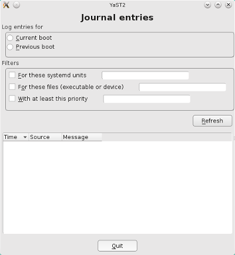
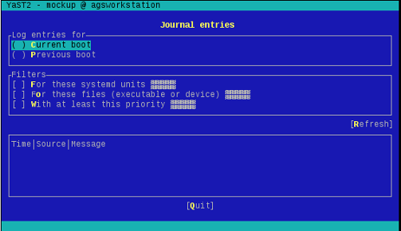

At this point, our first YaST module does not look very impressive. It's time to start adding some widgets to it in order to have a proper mockup of the user interface. Let's take a look to what we need:
That sounds challenging enough for a newbie, let's go for it!
From all the useful links that can be found in the "graphical interface" section of the YaST documentation home page, the UI layouts and events guide is probably the best starting point to fully understand how everything works and fits. But sometimes the best shortcut for learning is some example code and this URL is packed with nice examples of the usage of libYUI widgets from Ruby.
After having a look to the abovementioned documentation, feel free to start modifying MockupDialog yourself. When you are done (or right away if you are impatient), check the proposed example.
{% highlight bash %} git checkout first_mockup {% endhighlight %}Only one file (mockup_dialog.rb) has changed when compared to the previous git tag. The "run" method is now slightly more complex and it includes a rudimentary event loop.
{% highlight ruby %} # Displays the dialog def run return unless create_dialog begin return event_loop ensure close_dialog end end # Simple event loop def event_loop loop do input = Yast::UI.UserInput if input == :cancel # Break the loop break else log.warn "Unexpected input #{input}" end end end {% endhighlight %}For developers coming from more classical GUI toolkits like Gtk or Qt, the need to write an event loop can look strange. As opposed to those toolkits, libYUI is not event-driven because that approach does not completely fit the typical YaST application work-flow. Just in case you wonder, in the next step of this tutorial a second dialog will be added to our module and then you'll see a clear example of such a typical YaST dialog (not event-driven).
The other interesting method is "create_dialog" in which the content passed to Yast::UI.OpenDialog has changed from the simplistic label of the previous example to a full tree of widgets (YaST terms created using the UI shortcuts, if you remember) with a vertical box as the root node.
{% highlight ruby %} # Draws the dialog def create_dialog Yast::UI.OpenDialog( Opt(:decorated, :defaultsize), VBox( # Header Heading(_("Journal entries")), # Boot selector Frame( _("Log entries for"), boot_widget ), VSpacing(0.3), # Filter checkboxes Frame( _("Filters"), filters_widget ), VSpacing(0.3), # Refresh Right(PushButton(Id(:refresh), _("Refresh"))), VSpacing(0.3), # Log entries table, VSpacing(0.3), # Quit button PushButton(Id(:cancel), Yast::Label.QuitButton) ) ) end {% endhighlight %}Reading code is always interesting, but you actually want to check how it looks in the user's screen. You already know you can to it with:
{% highlight bash %} Y2DIR=src/ /usr/sbin/yast2 mockup {% endhighlight %}And this is what you get.
If you are not specially picky, the graphical interface looks acceptable. It's quite cluttered but still useful. Sure there are some layout issues but you think they could be fixed with no much work. After all, you have decided to start writing a YaST module from scratch, so sure you are an optimistic person.
But there is something you should never forget when developing a YaST module - it has to work properly with ncurses in a resolution of 80 columns and 25 lines. So the next step is to resize your terminal emulator to a size of 80x25 and run:
{% highlight bash %} Y2DIR=src/ /usr/sbin/yast2 --ncurses mockup {% endhighlight %}The result looked far from perfect in graphical mode, but with ncurses and a size of 80x25 it looks almost catastrophic. Very little space is left for the log entries, which is the most relevant part. Needless to say, it will become even worst if we add more filters in the future.
From the previous screenshot, it's obvious that we need to rethink our user interface to avoid having everything in one single dialog. Time for the next step.